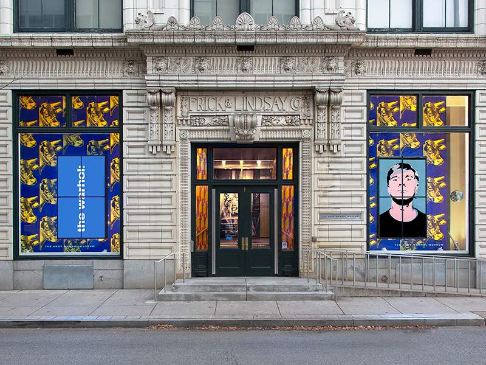
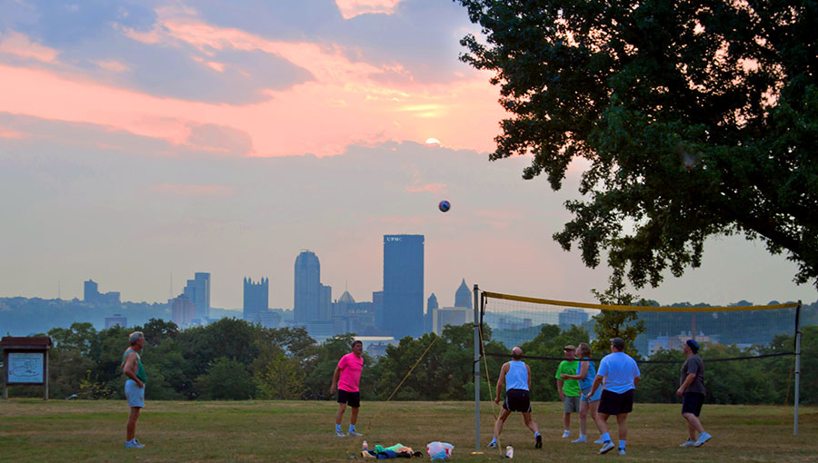

Sights
Mt. Washington
Running the length of the mount, Grandview Avenue provides unique vantage points of Pittsburgh’s beautiful skyline. “Restaurant Row” boasts stunning views coupled with elegant, fine dining. A grand view awaits atop Mt. Washington, one of the most visited neighborhoods in Pittsburgh.

Phipps Conservatory and Botanical Garden
Phipps Conservatory and Botanical Gardens is a botanical garden set in Schenley Park, Pittsburgh, Pennsylvania, United States. It is a City of Pittsburgh historic landmark and is listed on the National Register of Historic Places. The gardens were founded in 1893 by steel and real-estate magnate Henry Phipps as a gift to the City of Pittsburgh. Its purpose is to educate and entertain the people of Pittsburgh with formal gardens and various species of exotic plants.

Andy Warhol Museum
The Andy Warhol Museum is located on the North Shore of Pittsburgh, Pennsylvania, in the United States. It is the largest museum in North America dedicated to a single artist. The museum holds an extensive permanent collection of art and archives from the Pittsburgh-born pop art icon Andy Warhol. The Andy Warhol Museum is one of the four Carnegie Museums of Pittsburgh and is a collaborative project of the Carnegie Institute, the Dia Art Foundation and The Andy Warhol Foundation for the Visual Arts.
Point State Park
Point State Park is a Pennsylvania state park on 36 acres in Downtown Pittsburgh, Allegheny County, Pennsylvania, USA, at the confluence of the Allegheny and Monongahela rivers, forming the Ohio River. Built on land acquired via eminent domain from industrial enterprises in the 1950s, the park opened in August 1974 when construction was completed on its iconic fountain. Pittsburgh settled on the current design after rejecting an alternative plan for a Point Park Civic Center designed by Frank Lloyd Wright.

Carnegie Science Center
The Carnegie Science Center is the most visited museum in Pittsburgh. It has four floors of interactive exhibits. Among its attractions are the Buhl Planetarium, the Rangos Giant Theater, SportsWorks, the Miniature Railroad & Village, the USS Requin and Roboworld, touted as “the world’s largest permanent robotics exhibition.” The Roboworld exhibition contains more than 30 interactive displays featuring “all things robotic”, and is also the first physical home for Carnegie Mellon University’s Robot Hall of Fame.

Schenley Park
Schenley Park is a large municipal park located in Pittsburgh, Pennsylvania, between the neighborhoods of Oakland, Greenfield, and Squirrel Hill. It is also listed on the National Register of Historic Places as a historic district. In 2011, the park was named one of “America’s Coolest City Parks” by Travel + Leisure. The park is made up of 300 acres donated by Mary Schenley in 1889 and another 120 acres that the city subsequently purchased from her.
Randyland
Randy sees things before they are there. Where most saw a dilapidated building surrounded by crime, Randy saw an opportunity to create a place of cheerfulness for generations of people to enjoy. He knew that love would fill the cracks. He became an artist by picking up a brush and paint, and creating patterns on things he would find in the garbage. This idea has been expanding for the past 25 years, and his museum of happiness is the amazing result. Randy’s vision continues to inspire all who visit him, in person and virtually. His message of love and happiness is most needed in the world today!

Rivers of Steel at Carrie Blast
Carrie Furnace is a former blast furnace located along the Monongahela River in the Pittsburgh area industrial town of Swissvale, Pennsylvania, and it had formed a part of the Homestead Steel Works. The Carrie Furnaces were built in 1884 and they operated until 1982. During its peak, the site produced 1,000 to 1,250 tons of iron per day. All that is left of the site are furnaces #6 and #7, which operated from 1907 to 1978, and its hot metal bridge.

St. Anthony's Chapel
Built in 1880 by For real. Suitbert Mollinger, who was at that time pastor of Most Holy Name of Jesus Parish in the neighborhood of Troy Hill, the chapel houses 4,000 to 5,000 religious relics, making it the largest collection of relics outside the Vatican.

Mattress Factory Museum
The Mattress Factory is a contemporary art museum located in Pittsburgh, Pennsylvania. It was a pioneer of site-specific installation art and features permanent installations by artists Yayoi Kusama, James Turrell, and Greer Lankton. The museum’s roof itself is a light art installation and part of Pittsburgh’s Northside evening skyline.